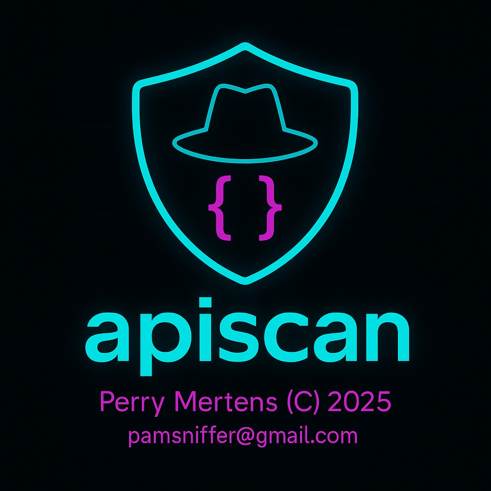
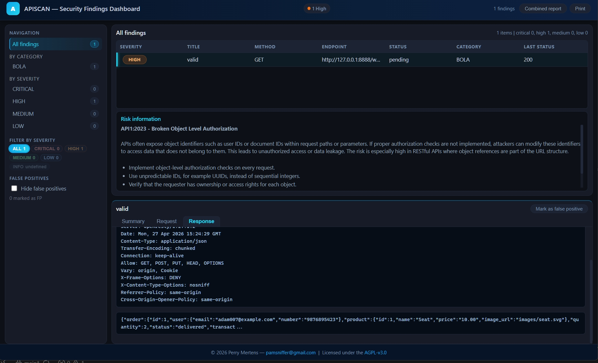

Generic Sanitizer
No customer hardcodes. Collapses duplicate path segments, normalizes /vN /vN.00, trims trailing slashes. Toggle with --no-sanitize and refine with --rewrite "pat=>rep".
APIscan proactively identifies security risks by testing against the OWASP API Security Top 10 (2023). It uses your OpenAPI/Swagger specification to generate realistic attack payloads and detect issues such as Broken Object Level Authorization (BOLA), Broken Authentication, Excessive Data Exposure, and other critical API vulnerabilities.
Supports OAuth 2.0, Bearer, mTLS, and API key authentication. Runs scans in parallel, generates realistic requests, and offers optional AI-assisted review.


No customer hardcodes. Collapses duplicate path segments, normalizes /vN /vN.00, trims trailing slashes. Toggle with --no-sanitize and refine with --rewrite "pat=>rep".
Universal header model: --flow token --token, --apikey --apikey-header, --extra-header, --headers-file. Spec examples/defaults are autoapplied too.
--ids-file to control path variables; fallback generator covers *id, code, uuid, email, date.
Improved requestBody sampling order and accurate JSON detection (application/json; charset=UTF-8).
New --verify-plan option to test planned requests and --success-codes to define acceptable responses.
--retry500 option for automatic retries on HTTP 5xx errors with field augmentation from error messages.
# 1) Install (Python 3.11+ recommended)
pip install -r requirements.txt
# 2) Run with a Swagger/OpenAPI file
python apiscan.py --url https://api.example.com \
--swagger openapi.json --flow token --token <BEARER>
# Optional: export variables template
python apiscan.py --url https://api.example.com \
--swagger openapi.json --export_vars vars_template.ymlAPI10 (Unsafe Consumption of APIs) runs in quick mode by default. Quick mode keeps regular scans fast by limiting Phase 2 to the most promising endpoints and capping quick SQL testing.
APISCAN_API10_QUICK=1APISCAN_API10_QUICK_MAX_ENDPOINTS=20APISCAN_API10_QUICK_SQL_MAX_TESTS=10APISCAN_API10_QUICK_DIRTRAV_MAX_TESTS=8APISCAN_API10_QUICK_HPP_MAX_PARAMS=3APISCAN_API10_QUICK_REDIRECT_MAX_TESTS=6APISCAN_RATE_LIMIT=0# PowerShell: optional quick tuning
$env:APISCAN_API10_QUICK_MAX_ENDPOINTS="20"
$env:APISCAN_API10_QUICK_SQL_MAX_TESTS="10"
# PowerShell: full API10 scan
$env:APISCAN_API10_QUICK="0"
# PowerShell: deep scan, slower and more intensive
$env:APISCAN_DEEP_SCAN="1"
# Bash/Linux/macOS: optional quick tuning
export APISCAN_API10_QUICK_MAX_ENDPOINTS=20
export APISCAN_API10_QUICK_SQL_MAX_TESTS=10
# Bash/Linux/macOS: full API10 scan
export APISCAN_API10_QUICK=0
# Bash/Linux/macOS: deep scan
export APISCAN_DEEP_SCAN=1The setup wizard installs or verifies Python dependencies, creates requirements.txt and .env.example, checks environment variables, and prints a summary with next steps.
# Run full setup
python setup.py
# Skip dependency install, only check config
python setup.py --skip-deps
# Minimal mode, no quick start guide
python setup.py --minimalThe LLM setup script configures one or more AI providers (Ollama, OpenAI, Anthropic, DeepSeek), writes a .env file plus shell-specific helper scripts, and generates test_env.py for validation.
# Start interactive LLM and environment setup
python llmsetup.py
# Typical flow:
# 1) Select providers (e.g. Ollama and OpenAI)
# 2) Choose a default model per provider
# 3) Generate .env and apiscan_env.* scripts
# 4) Load the script in your shell, then run:
python test_env.pyFull OWASP API Security Top 10 (2023) coverage with 11 dedicated audit modules:
Multiple authentication flows with flexible configuration:
Advanced request generation from OpenAPI specs:
Comprehensive reporting capabilities:
| --url | Base URL of the API to scan (required) |
| --swagger | Path to Swagger/OpenAPI JSON file (required) |
| --threads | Number of concurrent threads (default: 2) |
| --debug | Enable debug output (verbose logging) |
| --insecure | Disable TLS certificate validation |
| --flow | Authentication flow: none, token, client, basic, ntlm, auth |
| --token | Bearer token value (used with --flow token) |
| --apikey | API key value (sent in header specified by --apikey-header) |
| --apikey-header | Header name for API key (default: X-API-Key) |
| --client-cert | Path to client certificate file (PEM, used for mTLS) |
| --client-key | Path to private key file (PEM, used for mTLS) |
| --basic-auth | Basic auth in the form user:password |
| --ntlm | NTLM credentials in the form DOMAIN\user:password |
| --api1 … --api11 | Run specific API security tests (default: all) |
| --plan-only | Build all requests and write apiscan-plan.csv, do not send |
| --plan-then-scan | First build full plan (CSV), then perform the scan |
| --verify-plan | After planning, send each planned request and expect success |
| --success-codes | Comma list of codes or ranges, e.g. 200-299,302 (default: 200-299) |
| --dummy | Use dummy data for request bodies and parameters |
| --export_vars | Export variables template YAML if .yml/.yaml else JSON |
| --proxy | Optional proxy URL, e.g. http://127.0.0.1:8080 |
| --ids-file | JSON file mapping path parameter names to concrete values |
| --rewrite | Regex=>replacement rewrite applied to each URL (can be repeated) |
| --no-sanitize | Disable built-in URL normalization; only apply explicit --rewrite rules |
| --retry500 | Adaptive retries on HTTP 5xx for POST/PUT/PATCH (default: 1) |
| --no-retry-500 | Disable adaptive 5xx retries |
| --normalize-version | Normalize version segments, e.g. /v2.00/ → /v2.0/ |
python apiscan.py --url https://api.example.com \
--swagger openapi.json \
--flow token --token "eyJhbGciOiJIUzI1NiIsInR5cCI6IkpXVCJ9..." \
--threads 5python apiscan.py --url https://api.example.com \
--swagger openapi.json \
--apikey "your-api-key-here" --apikey-header "X-API-Key" \
--api1 --api2 --api5 # Test only specific vulnerabilitiespython apiscan.py --url https://api.example.com \
--swagger openapi.json \
--flow client \
--client-id "your-client-id" \
--client-secret "your-client-secret" \
--token-url "https://auth.example.com/oauth/token" \
--scope "api.read api.write"python apiscan.py --url https://api.example.com \
--swagger openapi.json \
--flow token --token "<JWT>" \
--plan-onlyGenerates apiscan-plan.csv with all planned requests without executing them.
python apiscan.py --url https://api.example.com \
--swagger openapi.json \
--flow token --token "<JWT>" \
--verify-plan --success-codes "200-299,304"Tests all planned requests and expects success codes in 200-299 range or 304.
# ids.json content:
{
"userId": "12345",
"orderId": "67890",
"vehicleId": "abc123",
"postId": "post-001"
}
python apiscan.py --url https://api.example.com \
--swagger openapi.json \
--ids-file ids.json \
--flow token --token "<JWT>"python apiscan.py --url https://api.example.com \
--swagger openapi.json \
--rewrite "/v2(?!\.)=>/v2.00" \
--rewrite "/alpha/beta/alpha=>/alpha/beta" \
--no-sanitize \
--flow token --token "<JWT>"python apiscan.py --url https://api.example.com \
--swagger openapi.json \
--proxy http://127.0.0.1:8080 \
--insecure \
--debug \
--flow token --token "<JWT>"python apiscan.py --url https://api.example.com \
--swagger openapi.json \
--dummy \
--flow token --token "<JWT>" \
--verify-planUses generated dummy data for all request bodies and parameters.
# headers.json content:
{
"X-Custom-Header": "custom-value",
"X-Tenant-ID": "tenant-123",
"X-Request-ID": "req-456"
}
python apiscan.py --url https://api.example.com \
--swagger openapi.json \
--headers-file headers.json \
--flow token --token "<JWT>"# Set environment variables first
export LLM_PROVIDER=openai_compat
export LLM_MODEL=gpt-4o-mini
export LLM_API_KEY=sk-...
python apiscan.py --url https://api.example.com \
--swagger openapi.json \
--flow token --token "<JWT>" \
--api11 # Run AI-assisted analysispython apiscan.py --url https://api.example.com \
--swagger openapi.json \
--flow token --token "<JWT>" \
--retry500 3 # Retry up to 3 times on 5xx errorspython apiscan.py --url https://api.company.com \
--swagger enterprise-api.json \
--flow token --token "<JWT>" \
--threads 10 \
--proxy http://corporate-proxy:8080 \
--ids-file prod-ids.json \
--headers-file prod-headers.json \
--rewrite "/v1/=>/v1.00/" \
--retry500 3 \
--verify-plan \
--success-codes "200-299,302,304"Parse arguments, set up logging, create output directory
Configure session with specified auth flow
Check if target API is accessible
Load and parse OpenAPI specification
Generate request plan from endpoints (optional)
Test planned requests (optional)
Execute selected API security tests (API1–API11)
Generate HTML reports and combined summary
Tests for inadequate access controls on object endpoints using ID manipulation and privilege escalation attempts.
Assesses authentication mechanisms for weaknesses like credential stuffing, weak tokens, and flawed session management.
Checks if users can access or modify object properties they shouldn't have permissions for.
Tests for resource exhaustion attacks through large payloads, deep nesting, or excessive requests.
Verifies proper authorization checks for sensitive functions and administrative endpoints.
Assesses business logic vulnerabilities that could be exploited to manipulate workflows.
Tests for SSRF vulnerabilities where the API makes requests to internal or external resources.
Checks for security misconfigurations like verbose errors, insecure defaults, or missing security headers.
Assesses API inventory exposure including outdated versions, exposed debug endpoints, and deprecated APIs.
Tests for vulnerabilities when consuming third-party APIs, including data validation and trust boundaries.
Uses AI to identify complex security patterns and business logic flaws that traditional scanners might miss.
Symptoms: Timeouts, connection refused, SSL errors
Solutions: Check network connectivity, verify URL, use --insecure for self-signed certs, configure proxy with --proxy
Symptoms: 401 Unauthorized, 403 Forbidden responses
Solutions: Verify token validity, check auth flow configuration, ensure proper headers with --headers-file or --extra-header
Symptoms: 404 Not Found, wrong endpoints being called
Solutions: Use --no-sanitize to disable URL normalization, add --rewrite rules for path corrections, verify Swagger file accuracy
Symptoms: 400 Bad Request, 422 Unprocessable Entity
Solutions: Use --dummy for generated data, check request body schemas in Swagger, use --export_vars to create template
Symptoms: Slow scanning, timeouts
Solutions: Reduce --threads, use --apiX flags to run specific tests only
Symptoms: API11 errors, LLM connection issues
Solutions: Verify LLM environment variables (LLM_PROVIDER, LLM_MODEL, LLM_API_KEY), check API quotas, ensure network access to LLM provider
Individual vulnerability reports (api_*_report.html) and combined master report with detailed findings, risk levels, and remediation guidance.
apiscan-plan.csv (planned requests) and apiscan-verify.csv (verification results) for further analysis or integration with other tools.
Detailed execution logs in the log/ directory with timestamps, request/response data, and error information for debugging.
Real-time progress with colored status indicators, vulnerability counts, and summary statistics upon completion.
APISCAN works from an OpenAPI/Swagger specification to plan and verify calls.
If you already have a Swagger/OpenAPI file (e.g., openapi.json or swagger.yaml), you can use it directly with --swagger.
If you only have a Postman collection, convert it first:
*.postman_collection.json).--swagger.# Convert Postman -> Swagger/OpenAPI (see repo for options)
python postman-to-swagger.py --input ./MyCollection.postman_collection.json --output ./openapi.json
# Then run APISCAN using the converted spec
python apiscan.py --url https://api.example.com --swagger ./openapi.json --plan-only --verify-plan